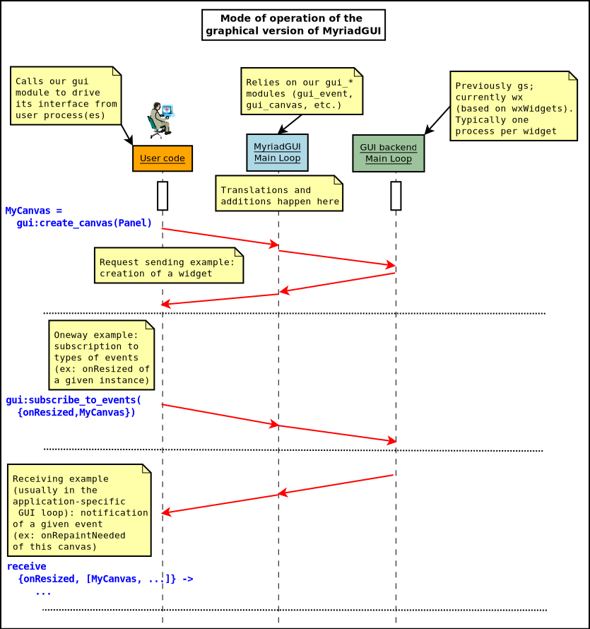
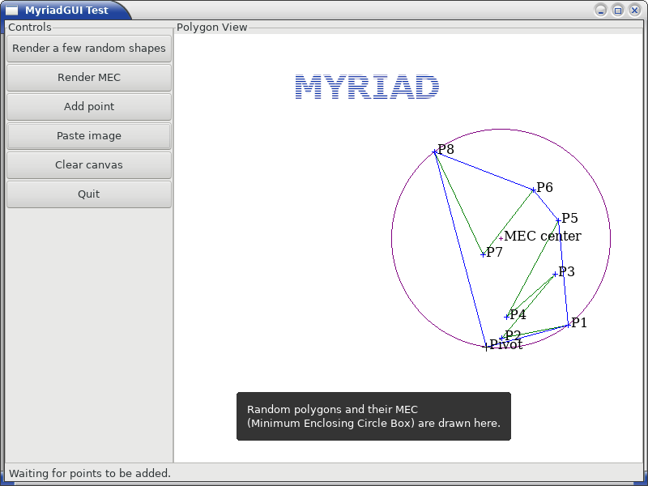
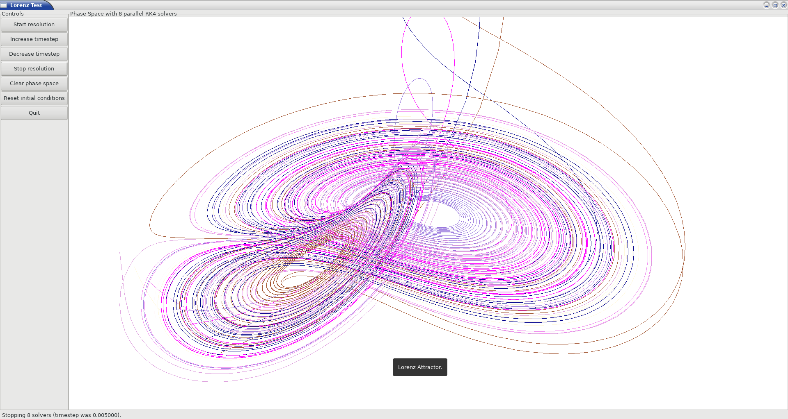

Even if this document does not constitute an exhaustive walk-through, each of them is detailed in turn below.
It may be useful to decide, at compile-time, whether some code should be added / removed / transformed / generated based on tokens defined by the user.
This is done here thanks to the use of conditional primitives and associated compilation defines (sometimes designated as "macros", and typically specified in makefiles, with the -D flag).
These conditional primitives are gathered in the cond_utils module.
As an early example, so that a piece of code prints Hello! on the console when executed iff (if and only if) the my_token compilation token has been defined (through the -Dmy_token command-line flag), one may use:
cond_utils:if_defined(my_token, io:format("Hello!"))
Of course, as such a code injection is done at compilation-time, should compilation defines be modified the modules making use of the corresponding primitives shall be recompiled so that these changes are taken into account.
Let's enter a bit more in the details now.
A token (a compilation-time symbol) may or may not defined.
To define my_token, simply ensure that a -Dmy_token command-line option is specified to the compiler (ex: refer to ERLANG_COMPILER_TOKEN_OPT, in GNUmakevars.inc, for an example of definition for these flags).
To define my_token and set it to the integer value 127, use the -Dmy_token=127 command-line option. Values can also be floats (ex: -Dmy_token=3.14) or atoms (ex: -Dmy_token=some_atom).
A special token is myriad_debug_mode; if it is defined at all (and possibly associated to any value), the debug mode of Myriad is enabled.
We recommend that layers built on top of Myriad define their own token for debug mode (ex: foobar_debug_mode), to be able to finely select appropriate debug modes (of course all kinds of modes and configuration settings can be considered as well).
Based on the defined tokens, code may be injected; this code can be any Erlang expression, and the value to which it will evaluate (at runtime) can be used as any other value in the program.
Injecting a single expression (i.e. not multiple ones) is not a limitation: not only this single expression can be a function call (thus corresponding to arbitrarily many expressions), but more significantly a sequence of expressions (a.k.a. a body) can be nested in a begin / end block, making them a single expression .
Various primitives for code injection are available in the cond_utils (mostly pseudo-) module .
There is first if_debug/1, to be used as:
cond_utils:if_debug(EXPR_IF_IN_DEBUG_MODE)
Like in:
A = "Joe",
cond_utils:if_debug(io:format("Hello ~s!",[A]))
or, to illustrate expression blocks:
cond_utils:if_debug(begin
C=B+1,
io:format("Goodbye ~p",[C])
end)
These constructs will be replaced by the expression they specify for injection, at their location in the program, iff the myriad_debug_mode token has been defined, otherwise they will be replaced by nothing at all (hence with exactly no runtime penalty; and the result of the evaluation of if_debug/1 is then not an expression).
Similarly, if_defined/2, used as:
cond_utils:if_defined(TOKEN, EXPR_IF_DEFINED)
will inject EXPR_IF_DEFINED if TOKEN has been defined (regardless of any value associated to this token), otherwise the if_defined/2 call will be removed as a whole .
As for if_defined/3, it supports two expressions:
cond_utils:if_defined(TOKEN, EXPR_IF_DEFINED, EXPR_OTHERWISE)
For example:
% Older versions being less secure:
TLSSupportedVersions = cond_utils:if_defined(us_web_relaxed_security,
['tlsv1.3', 'tlsv1.2', 'tlsv1.1', 'tlsv1'],
['tlsv1.3'])
If us_web_relaxed_security has been defined, the first list will be injected, otherwise the second will.
Note that a call to if_defined/3 results thus in an expression.
Finally, with if_set_to/{3,4}, the injection will depend not only of a token being defined or not, but also onto the value (if any) to which it is set.
For if_set_to/3:
cond_utils:if_defined(TOKEN, VALUE, EXPR_IF_SET_TO_THIS_VALUE)
will inject EXPR_IF_SET_TO_THIS_VALUE iff TOKEN has been defined and set to VALUE. As a result, the specified expression will not be injected if some_token has been set to another value, or not been defined at all.
Usage example, -Dsome_token=42 having possibly been defined beforehand:
cond_utils:if_set_to(some_token,42, SomePid ! hello)])
As for if_set_to/4, in:
cond_utils:if_set_to(TOKEN, VALUE, EXPR_IF_SET_TO_THIS_VALUE, EXPR_OTHERWISE)
EXPR_IF_SET_TO_THIS_VALUE will be injected iff TOKEN has been defined and set to VALUE, otherwise (not set or set to a different value) EXPR_OTHERWISE will be.
Example:
Level = cond_utils:if_set_to(my_token, foobar_enabled, 1.0, 0.0) + 4.5
A similar construct in spirit is switch_execution_target/2, which will, depending on the current build-time execution target, inject a corresponding expression:
cond_utils:switch_execution_target(EXPR_IF_IN_DEVELOPMENT_MODE, EXPR_IF_IN_PRODUCTION_MODE)
So if the current execution target is development, the compilation will inject EXPR_IF_IN_DEVELOPMENT_MODE, otherwise EXPR_IF_IN_PRODUCTION_MODE will be.
Example:
io:format( "We are in ~ts mode.",
[cond_utils:switch_execution_target("development", "production")])
Finally, the switch_set_to/{2,3} primitives allow to generalise these if-like constructs, with one among any number of code branches selected based on the build-time value of a token, possibly with defaults (should the token not be defined at all, or defined to a value that is not among the ones associated to a code branch).
For that we specify a list of pairs, each made of a value and of the corresponding expression to be injected if the actual token matches that value, like in:
cond_utils:switch_set_to(TOKEN, [
{VALUE_1, EXPR_1},
{VALUE_2, EXPR_2},
% [...]
{VALUE_N, EXPR_N}])
For example:
cond_utils:switch_set_to(my_token, [
{my_first_value, io:format("Hello!")},
{my_second_value, begin f(), g(X,debug), h() end},
{some_third_value, a(X,Y)}])
A compilation-time error will be raised if my_token is not set, or if it is set to none of the declared values (i.e. not in [my_first_value, my_second_value, some_third_value]).
A variation of this primitive exists that applies a default token value if none was, or if the token was set to a value that is not listed among any of the ones designating a code branch, like in:
cond_utils:switch_set_to(TOKEN,
[ {VALUE_1, EXPR_1},
{VALUE_2, EXPR_2},
% [...]
{VALUE_N, EXPR_N}],
DEFAULT_VALUE)
As always with primitives that define a default, alternate branch, they always inject an expression and thus can be considered as such.
For example:
ModuleFilename = atom_to_list( cond_utils:switch_set_to(some_token,
[{1, foo}, {14, bar}, {20, hello}], 14) ++ ".erl"
Here, if some_token is not defined, or defined to a value that is neither 1, 14 or 20, then the 14 default value applies, and thus ModuleFilename is set to "bar.erl".
Refer to cond_utils_test.erl for further usage examples.
It may be convenient that, depending on a compile-time token (ex: in debug mode, typically triggered thanks to the -Dmyriad_debug_mode compilation flag), assertions (expressions expected to evaluate to the atom true) are enabled, whereas they shall be dismissed as a whole should that token not be defined.
To define an assertion enabled in debug mode, use assert/1, like in:
cond_utils:assert(foo(A,B)=:=10)
Should at runtime the expression specified to assert/1 be evaluated to a value V that is different from the atom true, a {assertion_failed,V} exception will be thrown.
More generally, an assertion may be enabled by any token (not only myriad_debug_mode) being defined, like in:
cond_utils:assert(my_token,bar(C))
Finally, an assertion may be enabled iff a token (here, some_token) has been defined and set to a given value (here, 42), like in:
cond_utils:assert(some_token,42,not baz() andalso A)
This may be useful for example to control, on a per-theme basis, the level of checking performed, like in:
cond_utils:assert(debug_gui,1,basic_testing()),
cond_utils:assert(debug_gui,2,more_involved_testing()),
cond_utils:assert(debug_gui,3,paranoid_testing()),
Note that, in this case, a given level of checking should include the one just below it (ex: more_involved_testing() should call basic_testing()).
Finally, if assertions are too limited (ex: because they lead to unused variables depending on a token being defined or not), using one of the cond_utils:if* primitives relying on two branches (one expression if a condition is true, another if not) should sufficient to overcome such issue.
For tokens, at least currently they must be defined as immediate values (atoms); even using a mute variable, like for the _Default=my_token expression, or a variable, is not supported (at least yet).
Note that, for primitives that may not inject code at all (ex: if_debug/1), if their conditions are not fulfilled, the specified conditional code is dismissed as a whole, it is not even replaced for example by an ok atom; this may matter if this conditional is the only expression in a case clause for example, in which case a compilation failure like "internal error in core; crash reason: function_clause in function v3_core:cexprs/3 called as v3_core:cexprs[...]" will be reported (the compiler sees unexpectedly a clause not having even a single expression).
A related issue may happen when switching conditional flags: it will select/deselect in-code expressions at compile time, and may lead functions and/or variables to become unused, and thus may trigger at least warnings .
For functions that could become unused due to the conditional setting of a token, the compiler could certainly be silenced by exporting them; yet a better approach is surely to use:
-compile({nowarn_unused_function,my_func/3}).
or:
-compile({nowarn_unused_function,[my_func/3, my_other_func/0]}).
As for variables, should A, B or C be reported as unused if some_token was not set, then the basic_utils:ignore_unused/1 function (mostly a no-op) could be of use:
[...]
cond_utils:if_defined(some_token,
f(A, B, C),
basic_utils:ignore_unused([A, B, C])),
[...]
Alternatively, nowarn_unused_vars could be used instead, at least in some modules.
Some services have been defined, in myriad/src/user-interface, in order to handle more easily interactions with the user, i.e. to provide a user interface.
The spirit of MyriadGUI is to offer, as much as possible, a high-level API (refer to the ui module) that can be seamlessly instrumented at runtime by different backends, depending on availability (ex: is this dependency installed?) and context (ex: is the program running in a terminal, or are graphical outputs possible?).
Unless the user forces the use of a given backend, the most advanced one that is locally available will be automatically selected.
An objective is to shelter user code from:
- the actual UI backend that will be selected ultimately on a given host
- the rise and fall of the various backends (thinking for example to gs having been quickly deprecated in favour of wx); the idea is then that any new backend could be integrated, with little to no change in already-written code relying on MyriadGUI
Of course not all features of all backends can be integrated (they have not the same expressivity, a common base must be enforced ) and creating a uniform interface over all sorts of vastly different ways of displaying and interacting with the user would require a lot of efforts. So MyriadGUI follows a pragmatic route: defining first basic, relevant, user-centric conventions and services able to cover most needs and to federate (hopefully) most backends, and to incrementally augment its implementation coverage on a per-need basis. As a consequence, efforts have been made so that adding any lacking element can be done at low cost.
Such a user interface may be:
- either text-only, within a console, relying either on the very basic text_ui (for raw text) or its more advanced term_ui counterpart (for terminal-based outputs, with colours and text-based widgets)
- or graphical, with gui
- (and/or, in a possible future, audio, with a audio_gui that could be added)
Text-based user interfaces are quite useful, as they are lightweight, incur few dependencies (if any), and can be used with headless remote servers (text_ui and term_ui work well through SSH, and require no X server nor mouse).
As for graphical-based user interfaces, they are the richest, most usual, and generally the most convenient, user-friendly interfaces.
The user interfaces provided by Myriad are stateful, they rely on a state that can be:
- either explicit, in a functional way; thus having to be carried in all calls
- or implicit, using - for that very specific need only - the process dictionary (even if we try to stay away of it as much as possible)
We tested the two approaches and preferred the latter (implicit) one, which was found considerably more flexible and thus finally fully superseded the (former) explicit one.
We made our best so that a lower-level API interface (relying on a more basic backend) is strictly included in the higher-level ones (ex: term_ui adds concepts - like the one of window or box - to the line-based text_ui; similarly gui is richer than term_ui), in order that any program using a given user interface may use any of the next, upper ones as well (provided implicit states are used), in the following order: the text_ui API is included in the one of term_ui, which is itself included in the one of gui.
We also defined the settings table, which is a table gathering all the settings specified by the developer, which the current user interface does its best to accommodate.
Thanks to these "Matryoshka" APIs and the settings table, the definition of a more generic ui interface has been possible. It selects automatically, based on available local software dependencies, the most advanced available backend, with the most relevant settings.
For example a relevant backend will be automatically selected by:
$ cd test/user-interface
$ make ui_run
On the other hand, if wanting to select a specified backend:
$ make ui_run CMD_LINE_OPT="--use-ui-backend term_ui"
(see the corresponding GNUmakefile for more information)
This is the most basic, line-based monochrome textual interface, directly in raw text with no cursor control.
It is located in {src,test}/user-interface/textual; see text_ui.erl for its implementation, and text_ui_test.erl for an example of its use.
This is a more advanced textual interface than the previous one, with colors, dialog boxes, support of locales, etc., based on dialog (possibly whiptail could be supported as well). Such backend of course must be available on the execution host then.
For example, to secure these prerequisites:
# On Arch Linux:
$ pacman -S dialog
# On Debian-like distros:
$ apt-get install dialog
It is located in {src,test}/user-interface/textual; see term_ui.erl for its implementation, and term_ui_test.erl for an example of its use.
For Classical 2D Applications
GUI Backend
This interface relied initially on gs (now deprecated), now on wx (a port of wxWidgets), maybe later in HTML 5 . For the base dialogs, Zenity could have been an option.
If having very demanding 2D needs, one may refer to the 3D services section (as it is meant to be hardware-accelerated, and the 2D services are a special cases thereof).
Note
gui does not adhere yet to the ui conventions, but it will ultimately will. Currently it offers a graphical API on top of wx.
As a consequence, wxWidgets must be available on the host (otherwise a {load_driver,"No driver found"} exception will be raised on GUI start). This should correspond to the wxgtk3 Arch Linux package, or the libwxgtk3.0-dev Debian one. This can be tested by executing wx-config --version on a shell.
wxWidgets must be installed prior to building Erlang, so that it is detected by its configuration script and a proper wx module can be used afterwards. Running then wx:demo() is a good test of the actual support.
Purpose of gui
The goal is to provide a small, lightweight API (including message types) that are higher-level than wx, and do not depend on any particular GUI backend (such as wx, gs, etc.; so none of their includes, records, types or functions leak in the user realm), to avoid that user programs become obsolete too quickly because of the UI backend they rely on.
So for example the messages received by the user programs do not mention wx, and respect only MyriadGUI conventions. These conventions are in line with the WOOPER ones, enabling (in a fully optional manner) the user code to rely on WOOPER if wanted.
The usual mode of operation is the following:

- From a user process (a test, an application, etc.), the GUI support is first started, with gui:start/{0,1}
- Then the various widgets (windows, frames, panels, buttons, etc.) are created (ex: thanks to MainFrame = gui:create_frame(...) and the user process subscribes to the events it is interested in (as a combination of an event type and a widget-as-an-event-emitter; for example:
gui:subscribe_to_events({onWindowClosed, MainFrame}))
- The user process also triggers any relevant operation (ex: clearing widgets, setting various parameters), generally shows at least a main frame and records the GUI state that it needs for future use (typically containing at least the MyriadGUI references of the widgets that it created)
- Then the user process enters its own (GUI-specific) main loop, from which it will receive the events that it subscribed to, and to which it will react by performing application-specific operations and/or GUI-related operations (creating, modifying, deleting widgets). Generally at least one condition is defined in order to leave that main loop and stop the GUI (gui:stop/0)
Such a scheme based on a "man-in-the-middle" (the MyriadGUI process) is necessary to abstract out for example the types of messages induced by a given GUI backend. If performances should not be an issue for user interaction, the integration must be carefully designed, notably because a 3-actor cooperation (user code, MyriadGUI one, backend one) opens the possibility of race conditions to occur (notably some operations, like event subscribing, must then be made synchronous, as the user process may trigger direct interactions with the backend; see implementation notes for more details).
Refer to the gui_overall_test.erl and lorenz_test.erl test full, executable usage examples thereof.
Here is a screenshot of the former test, where a random polygon (in green) is generated, for which are determined both the convex hull (in blue) and the MEC (Minimum Enclosing Circle, in purple):

Defining gui as an interface between the user code and a backend also allows to enrich said backend .
These services are located in {src,test}/user-interface/graphical (see gui.erl, gui_color.erl, gui_text.erl, gui_canvas.erl, etc.), with a few tests (gui_test.erl, lorenz_test.erl) and will be enriched over time, on a per-need basis.
This last lorenz_test.erl offers another complete example:

Related information of interest:
- if receiving errors about {badarg,"This"}, like in:
{'_wxe_error_',710,{wxDC,setPen,2},{badarg,"This"}}
it is probably the sign that an attempt was done to perform an operation on an already-deallocated wx object
For 3D Applications
Purpose
In order to render 3D content, Myriad relies on OpenGL, a standard, cross-platform, uniform and well-designed programming interface that enables the use of video cards in order to deport most of the (2D or 3D) heavy-lifting there.
Sophisticated 3D rendering is not necessarily an area where Erlang shines (perhaps, on the context of a client/server multimedia application, the client could rely on an engine like Godot instead), yet at least some level of rendering capabilities is convenient whenever performing 3D computations, implementing a server-side 3D logic, processing meshes, etc.
Prerequisites
So a prerequisite is that the local host enjoys at least some kind of OpenGL support, either in software or, preferably, with an hardware acceleration.
Just run our gui_opengl_test.erl test to have the detected local configuration examined. One should refer to our HOWTO section about 3D operating system support for detailed information and troubleshooting guidelines.
As for the Erlang side of this OpenGL support, one may refer to this section to ensure that the Erlang build at hand has indeed its OpenGL support enabled.
3D Services
User API
The Myriad OpenGL utilities are defined in the gui_opengl module; the many OpenGL defines are available when having included gui_opengl.hrl (ex: as ?GL_QUAD_STRIP).
These utilities directly relate to Myriad's spatial services and conventions and to its support of the glTF file format.
The gui_opengl_test.erl offers a complete usage example.
Note
Almost all OpenGL operations require that an OpenGL context already exists. When it is done, all GL/GLU operations can be done as usual.
So the point of MyriadGUI here is mostly to create a suitable OpenGL context, offer a few additional, higher-level, stricter constructs to ease the integration and use, and to connect this rendering capability to the rest of the GUI (ex: regarding event management).
Configuration
In terms of error management, extensive verifications will apply iff the myriad_check_opengl_support flag is set.
Setting the myriad_debug_opengl_support flag will result in more runtime information to be reported.
Internal Implementation
The MyriadGUI 2D/3D services rely on the related Erlang-native modules, namely gl and glu.
As for the wx module (see the wx availability section), it provides a convenient solution in order to create a suitable OpenGL context.
esdl used to be another solution to obtain an OpenGL context; it may be revived some day, as SDL - i.e. Simple DirectMedia Layer - is still striving, and offers a full (yet low-level) access to multimedia and input devices; not all applications may have use of the rest of wx.
These Erlang-native services can be easily tested by running wx:demo() from any Erlang shell and selecting then gl in the left example menu.
These platform-specific / backend-specific (ex: wx or not, and which version thereof, ex: wxWidget 2.8 vs 3.0 API) services shall remain fully invisible from MyriadGUI user code, so that it remains sheltered for good from any change at their level.
The goal is to wrap only the dependencies that may change in the future (ex: wx); doing so for the ones considered (for good reasons) stable (such as gl or glu) would have no specific interest.
For Interactive Applications
Beyond the rendering of multimedia content, user interfaces have to collect inputs from the user, typically through mice, keyboards and joysticks.
Formerly, a port of SDL, esdl, was the best option, now using wx for that is recommended, as, through this port, the various input devices can be managed (at least to a large extent).
If the 2D/3D rendering can be done through wx, apparently the audio capabilities (ex: [1], [2]) of wxWidgets have not been made available to Erlang.
So an Erlang program needing audio output (ex: sound special effects, musics) and/or input (ex: microphone) will have to rely on another option, possibly in link, for audio rendering, to 3D-ready eopenal - an (Erlang) binding of OpenAL, or to a lower-level SDL-based solution. Contributions welcome!
Currently only very basic support for audio output is available, as audio_utils:playback_file/{2,3}.
See also our support for speech synthesis.